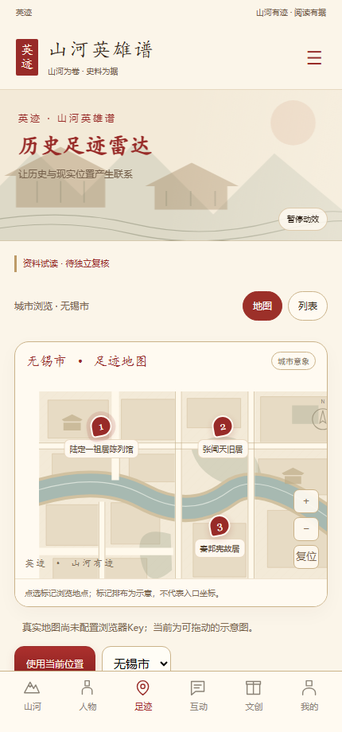
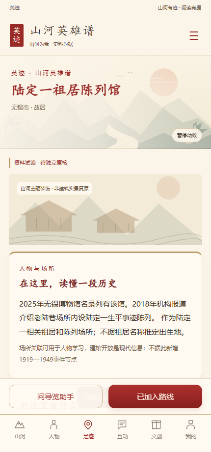
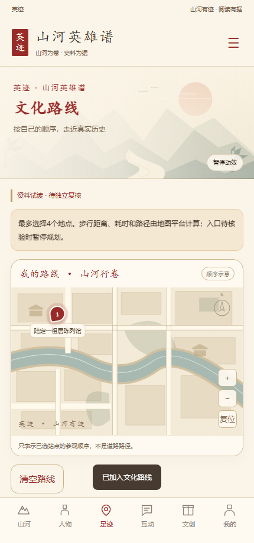

01 AI导览助手
五组人物选择、史料问答、操作导览、资料出处、停止与重试。模型辅助小程序使用、地点探索与文化路线指导；历史问答保留依据。

五组人物选择、史料问答、操作导览、资料出处、停止与重试。模型辅助小程序使用、地点探索与文化路线指导；历史问答保留依据。
主动定位与手动选城、类型筛选、附近地图、场馆列表。已核入口支持真实距离和点选。

真实介绍与地址、阅读看点、开放状态、关联人物、原始来源、加入路线。坐标不足时暂停导航。

最多4站、调整顺序、起点定位、平台步行折线和时间、分段指引。不设置现场任务。
